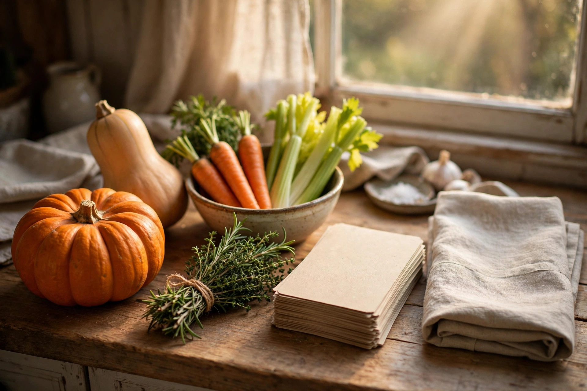

The long-weekend hosting timeline: what to do each day, Oct 10–12

Canadian Thanksgiving 2026 falls on Monday, October 12, which means most hosts get a three-day runway: Saturday the 10th, Sunday the 11th, and the holiday itself. The entire trick of a relaxed Thanksgiving is matching each task to the right day — perishables late, dishes early, and nothing that requires heroics on Monday morning.
This timeline assumes your main meal lands on Monday (the holiday). If your family does the big dinner on Sunday, just slide everything one day earlier.
The week before: set the stage
You don't need to cook anything yet. Do three things:
- Confirm the guest list and the meal plan. Headcount decides the turkey size and how much of everything else you need. If it's a potluck, assign dishes now — vague plans ("just bring something") are how you end up with four desserts and no vegetables. See the potluck guide for the full system.
- Shop the non-perishables. Canned pumpkin, broth, flour, sugar, crackers, foil, disposable containers for sending leftovers home. The stores get crowded by the weekend; get the boring stuff early.
- Buy the turkey if it's frozen. A frozen turkey needs roughly a day of fridge thawing per 4–5 pounds (about 2 kg), so a big bird bought on Wednesday might not be ready by Sunday. Buy early and read the turkey basics guide before you put it in the cart.
Saturday, Oct 10: prep day
Saturday is the workhorse. You're not cooking the meal — you're removing Monday's work.
- Clear and clean the fridge. You'll need real estate for thawing dishes, marinades, and tomorrow's leftovers. Toss anything expired now, not Sunday night.
- Make the cranberry sauce. It keeps beautifully for days and tastes better after the flavours settle. One less pot on Monday.
- Prep the vegetables. Wash, peel, and chop everything that can wait in water or a damp towel: carrots, celery, onions, potatoes (covered in cold water in the fridge so they don't brown).
- Make any dough. Pie dough, roll dough — both rest happily in the fridge overnight and are miserable to rush on the day.
- Set the table. Plates, glasses, cutlery, napkins, serving dishes with sticky notes saying what goes where. Future-you, mid-cooking on Monday, will be genuinely grateful.
- Chill drinks. Wine, sparkling water, cider — anything that needs to be cold has all night.
Sunday, Oct 11: cook-ahead day
Sunday is for the sides that reheat well and the pies that need a full night to set:
- Bake pies and desserts. Pumpkin pie in particular needs several hours to cool and set; Sunday-baked pie served Monday is ideal.
- Cook the make-ahead sides. Stuffing (reheat covered with a splash of broth), mashed potatoes (reheat with warm milk and butter), and gravy base all hold beautifully. The full list lives in the make-ahead sides guide.
- Brine or dry-brine the turkey if that's your plan — it needs 12–24 hours in the fridge.
- Confirm the Monday schedule with anyone contributing food: what they're bringing, what time it arrives, and whether it needs oven space.
Monday, Oct 12: the holiday
The only things left for Monday are the turkey, last-minute roasting, and reheating. Work backward from your target meal time — the turkey needs roughly 15 minutes per pound in a 325°F oven, plus at least 20–30 minutes of resting before carving.
A sample schedule for a 4:00 pm dinner:
| Time | Task |
|---|---|
| Morning | Turkey goes in (work backward from 4:00, including rest time) |
| 2 hours before | Reheat stuffing and mashed potatoes; prep the salad |
| 1 hour before | Roast the last-minute vegetables; warm the rolls |
| 30 min before | Turkey rests; make gravy from the drippings; reheat the gravy base |
| Meal time | Carve, plate, and sit down — you're done |
After dinner: the 20-minute reset
Before the post-dinner slump sets in, spend 20 minutes with your guests: carve the leftover turkey off the bone, get everything into shallow containers and into the fridge (perishables shouldn't sit out more than about 2 hours), and load the dishwasher. Then read the leftover game plan — Monday night's cleanup is the down payment on a week of great second-day meals.
Keep readingNext: turkey basics — sizing, thawing, roasting without stress →